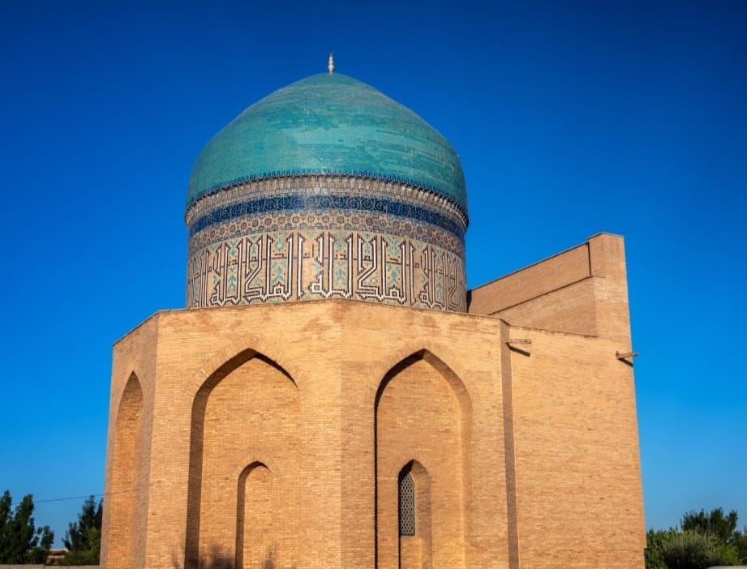
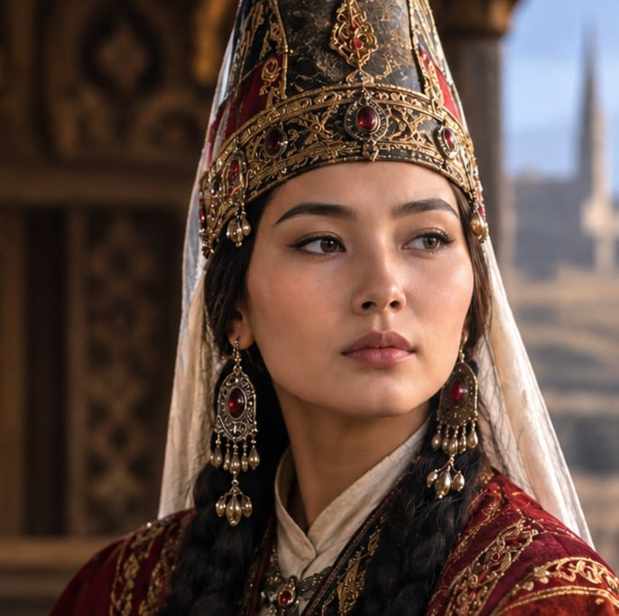
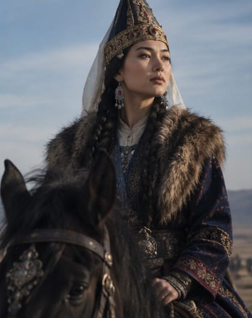
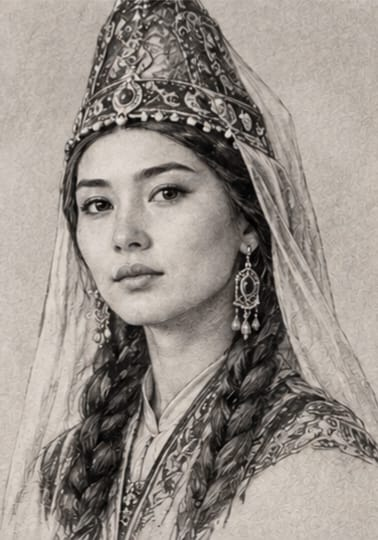
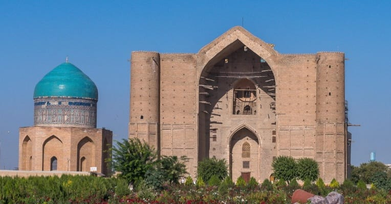

Интерактивті тарихи-цифрлық зерттеу жобасы • Түркістан, Қазақстан

Түркістан, Қазақстан
Темір әулетінің сұлуы, Ұлықбектің қызы және Әбілқайыр ханның жұбайы Рабия Сұлтан Бегімнің ұлы тұлғасын, саяси рөлін және Түркістандағы сәулет ескерткішін заманауи веб-технологиялар арқылы қайта жаңғырту.
Қазақ тарихындағы көрнекті әйел-тұлғалардың саяси және мәдени рөлін заманауи цифрлық кеңістікте дәріптеу — ұлттық жадты жаңғыртудың негізгі шарты.
Рабия Сұлтан Бегім кесенесі — ортағасырлық сәулет шедеврі әрі Дешті Қыпшақ пен Темір әулеті арасындағы алтын көпір. Жоба осы тарихи мұраны жастарға интерактивті, веб-GIS карталар мен медиа-контент арқылы тартымды жеткізуді көздейді.
Рабия Сұлтан Бегімнің Ұлы дала тарихындағы орнын, саяси-дипломатиялық ықпалын және оның Түркістандағы кесенесінің сәулеттік құндылығын заманауи веб-технологиялар мен веб-карта көмегімен кеңінен насихаттау және цифрлық мұраға айналдыру.



Рабия Сұлтан Бегім (шамамен 1420–1430 жж. туылып, 1485 жылы қайтыс болған) — Шығыстың аса көрнекті әрі ықпалды әйелдерінің бірі, Темір әулетінің өкілі. Ол ұлы ғалым, астроном, Самарқан әміршісі Ұлықбектің қызы еді.
1451 жылы саяси және әскери одақты нығайту мақсатында Ұлықбектің қызы Рабия Сұлтан Бегім Көшпелі өзбектер мемлекетінің билеушісі Әбілқайыр ханға ұзатылды. Бұл неке Темір әулеті мен Шайбанилер (Дешті Қыпшақ) арасындағы бейбітшілік пен мәдени сабақтастықты қамтамасыз етті.
Әбілқайыр хан қайтыс болғаннан кейін де ол Түркістанда өмір сүріп, мемлекеттік істерге, ханзадаларды тәрбиелеуге белсене араласты. Оның ұлдары Көшкінші мен Сүйінішқожа хандар кейіннен аймақта үлкен саяси билікке ие болды.
Ұлықбек пен Рукаийа ханымның отбасында дүниеге келді. Самарқанның ғылыми-мәдени ортасында тәрбиеленді.
Самарқандағы дипломатиялық келісімдер нәтижесінде Әбілқайыр ханмен некелесіп, Дешті Қыпшаққа келді.
Рабия Сұлтан Бегім Түркістан қаласында дүние салды. Қожа Ахмет Ясауи кесенесінің жанына жерленді.
Баласы Көшкінші ханның пәрменімен анасының басына сегізбұрышты еңселі кесене салынды.
Ресей империясының әскери билігі тарапынан кесененің жоғарғы күмбезді бөлігі бұзып тасталды.
Археологиялық зерттеулерден соң, кесене өзінің бастапқы ортағасырлық сәулеттік бейнесінде қайта тұрғызылды.
Кесене — Қожа Ахмет Ясауи кесенесінен 60 метр жерде орналасқан ортағасырлық бірегей ескерткіш.
Түркістанның ортағасырлық рухани және саяси орталық ретіндегі рөлін айшықтайтын басты нысандардың бірі.
Дешті Қыпшақ пен Мауереннахр өркениеттерінің арасындағы алтын көпір болған Темір мұрасының айғағы.
Ұлы даладағы саяси шешімдерге ықпал еткен, мемлекет қайраткері болған әйелдердің биік мәртебесін көрсетеді.
Рабия Сұлтан Бегім кесенесі Түркістан қаласының тарихи орталығында, «Әзірет Сұлтан» ұлттық музей-қорығының аумағында орналасқан.
Координаттары: 43°17'49.8"N 68°16'19.4"E
Мемлекеттік маңызы бар тарихи-мәдени ескерткіш болып табылады.
